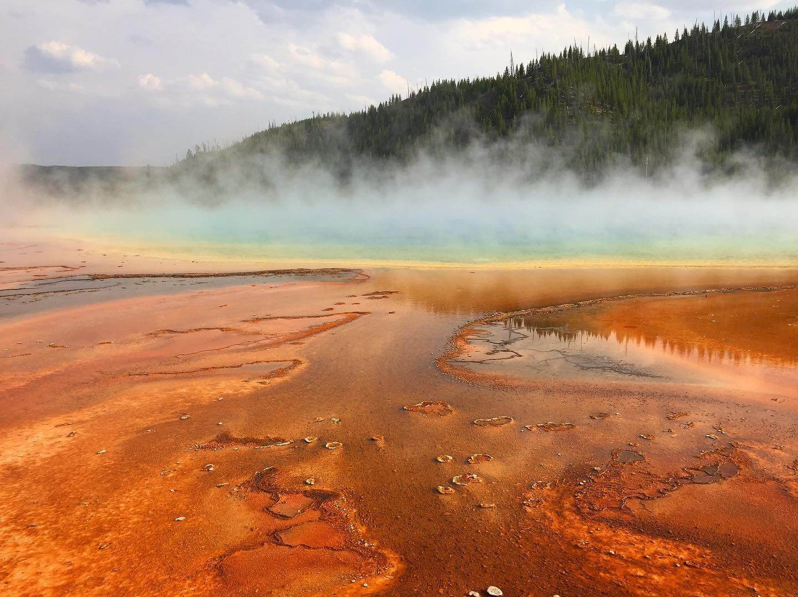
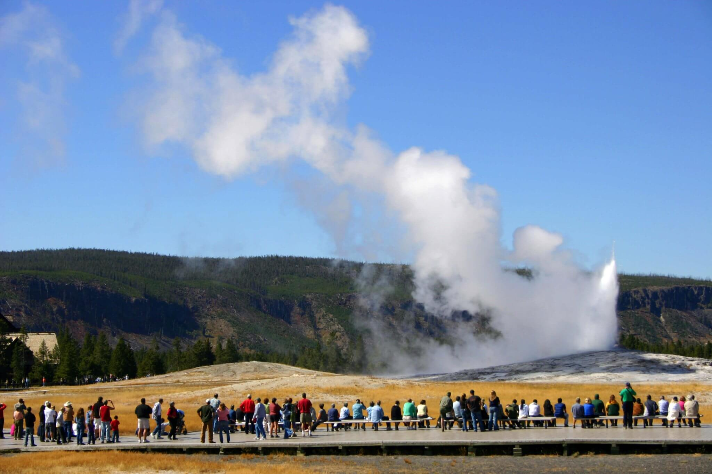
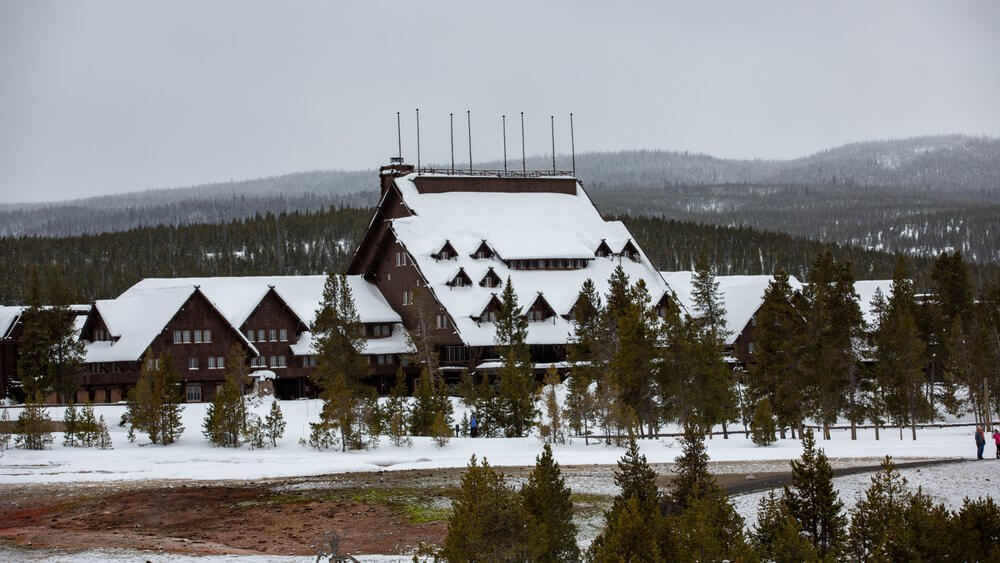
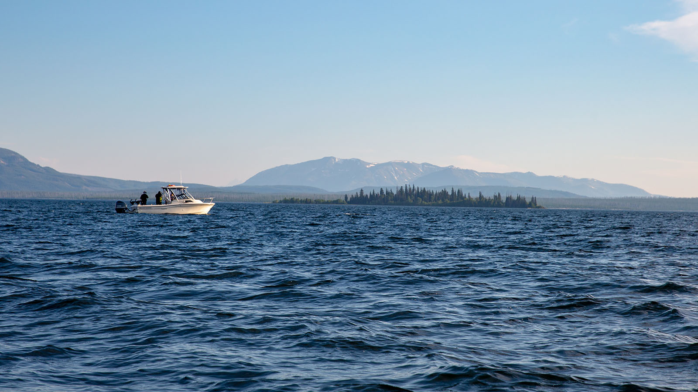

From the vibrant Grand Prismatic Spring to the iconic Old Faithful Geyser, thousands and thousands of visitors find themselves immersed in the breathtaking landscapes, face-to-face with wildlife encounters, and awestruck by the hydrothermal marvels of Yellowstone National Park. As such a large destination, it can be overwhelming to choose from so many things to do. Here are 5 of the best activities that are a must-see for any first-time traveler.
Bright, vibrant, and often steaming — one spectacular sight will demand your attention in Yellowstone, and it’s the Grand Prismatic Spring. Impressively sized, this natural wonder is over 300 feet in diameter and more than 120 feet deep, making it the biggest hydrothermal pool in the United States.Heated by the crust of the Earth itself, one of the Spring’s most noteworthy features is its beautiful color scheme, ranging from hot lava-like orange to a center of brilliant blue. Always photogenic, this attraction is ready for its closeup and to land squarely in your Instagram story, but don’t get too close — you cannot swim in the Grand Prismatic Spring.
It’s not a trip to Yellowstone until you see your first geyser; lucky for you, there is a one-stop destination for finding them. Spanning around 2 miles of the park’s landscape, The Upper Geyser Basin is the home base for the world-famous Old Faithful, as well as 250 other geysers making it one of the most extensive formations in the world.Morning Glory Pool, a hot spring also found in the Basin, was once a radiant blue akin to the flower itself. Changes in water temperature over time have resulted in shifting hues, but the pool is still a stunning must-see on your Yellowstone adventure.
Arguably the most recognizable name on this list of top things to do in Yellowstone, the Old Faithful Geyser calls the Upper Geyser Basin home and has lived up to its reputation for over 150 years. While there are larger geysers to view in Yellowstone National Park, this one has considerable staying power, and it’s all thanks to its mysterious consistency.Old Faithful’s cascading hot waterfall erupts on a fairly regular schedule, for a period of up to 5 minutes every hour and a half to two hours, making it an unforgettable experience.
If a brief visit to Old Faithful seems to fly by a little too fast, why not stay there the next time you’re exploring Yellowstone? Boasting the title of the world’s biggest log building, the Old Faithful Inn has served as a prime destination for nature lovers and outdoor enthusiasts since the early 1900s.While some rooms have been updated to provide visitors with modern conveniences, some are delightfully rustic, allowing folks to stay the way they did when the hotel was built. Several options for rustling up a good meal at the Inn include their dining room and Bear Paw Deli. Plus, the property’s view of Old Faithful can’t be beat.
Scaling the heights at Yellowstone National Park is part of the experience, and there’s one body of water that sits higher than you might expect: the beautiful Yellowstone Lake. With over 140 miles of shoreline, this exceptional lake spans about 20 miles in length and is the largest high-elevation lake in North America at nearly 8,000 feet above sea level. While the water is typically too cold for a dip, it is an excellent spot for a day of boating and fishing. In fact, Yellowstone Lake has the largest population of wild cutthroat trout in North America. Wondering where the water flows to? None other than the Yellowstone River.
